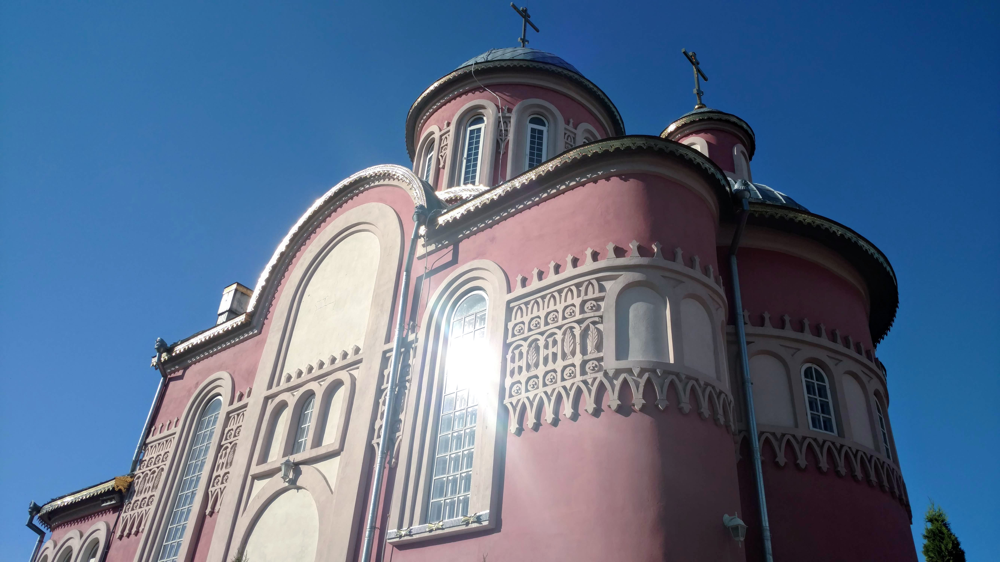

Храм Святого великомученика Пантелеймона
Українська Православна Церква, Володимир-Волинська єпархія, місто Ковель
Ковельське міське благочиння
Ковель
Тверезий Ковель
Невисникомп
Ковельські оголошення
2021 ©
Данилюк